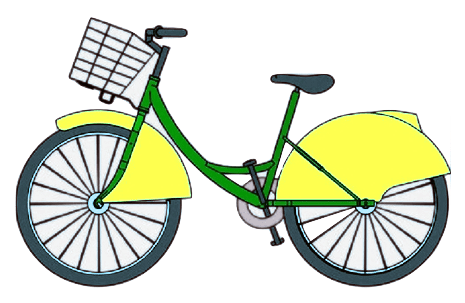

Comencem amb els números grans
, has fet un total de viatges aquest 2025
Això són un total de hores i minuts
pedalats, o km. Enhorabona!
La teva velocitat mitjana va ser de km/h. Prou bé!
Vas complir els teus propòsits d'any nou?
En tot cas, la primera Girocleta que vas agafar va ser el . Quins
records.
I l'última, de moment ha sigut el . Abans que acabi l'any jo crec que et
hi ha temps a fer algun viatge més!
Observem amb deteniment els viatges
El teu viatge més ràpid el vas fer . Això és una velocitat de km/h, impressionant!
I el més lent va ser . Amb la calma, no?
Deixem els viatges. A la xarxa de girocleta hi ha unes 790 bicicletes
De les quals tu n'has fet servir models diferents
Però clarament, tu en tenies una preferida, la , que vas fer servir un
total de vegades. Casualitat?
Si tens l'abonament anual pagues 30€ a l'any
Cada dia de viatge està valorat en 2€, i contant que has viatjat
dies diferents, has viatjat un valor de €
Per últim, deixem endevinar una cosa, crec que sé on vius, .
No t'espantis, és broma, però segur que vius a prop de perquè has fet
servir aquesta estació vegades el 2025
He encertat?
Aqui tens, resumit per mes els teus usos de la girocleta
%2C%0A%20%20%20%20%7D%5D%0A%20%20%7D%0A%7D)